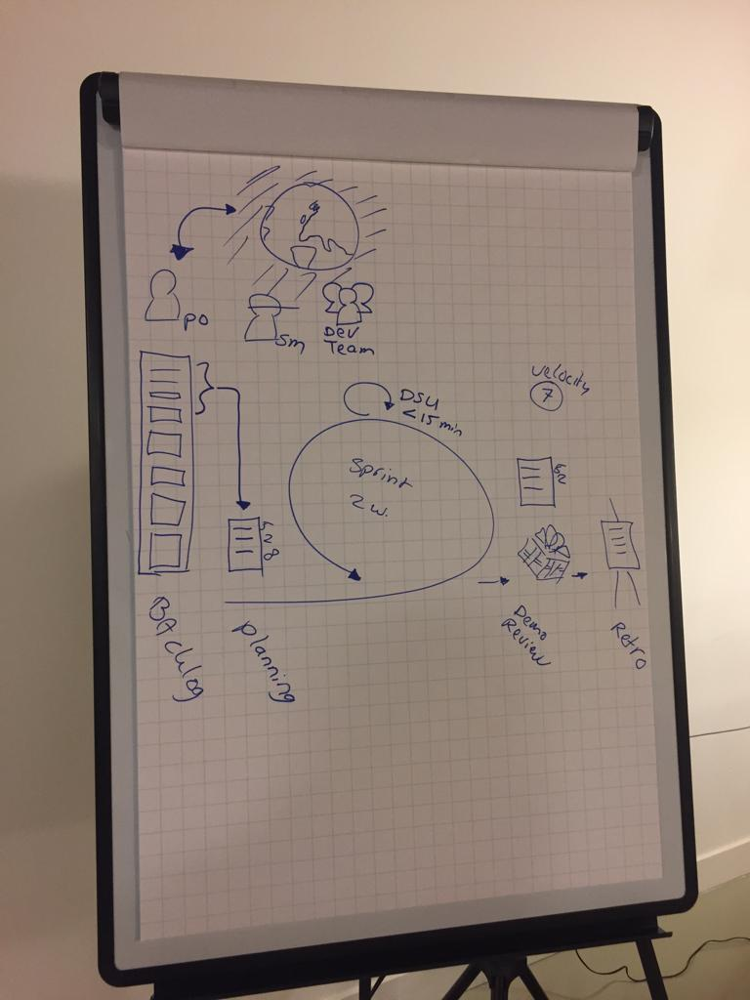

Thema Smart Business
Hieronder wordt per week de content geplaatst voor het thema Smart Business.
Iedere week wordt ter afsluiting gerefereerd naar de ontwikkelingen die hebben plaatsgevonden in de competenties.
Hieronder wordt per week de content geplaatst voor het thema Smart Business.
Iedere week wordt ter afsluiting gerefereerd naar de ontwikkelingen die hebben plaatsgevonden in de competenties.
Voorbereiding
Tijdens de eerste week van Smart Business was het de bedoeling om de wensen, behoeften en verwachtingen, omtrent de minor Smart Industry, van de verschillende deelnemers te achterhalen.
De gedachte hierbij was dat deelnemers vervolgens beter in staat waren om richting te geven aan het eigen leerproces.
Als voorbereiding op de workshop heb ik onderzoek gedaan naar User Profiles en Value Mapping. Deze methoden kunnen vervolgens in de workshop worden gebruikt om de wensen, behoeften en verwachtingen van de deelnemers te achterhalen. Verder heb ik als voorbereiding op de workshop nog een aantal interview vragen opgesteld voor de deelnemers, gericht op het achterhalen van hun behoeften en verwachtingen.
Deze voorbereiding is via onderstaande link te benaderen:
Workshop
Bij aanvang van de workshop kreeg iedere student de opdracht om de Value Proposition Canvas in te vullen.
Er werden groepjes van drie personen gevormd, die elkaar achtereenvolgens interviewden.
Tijdens de interviews werden allerlei vragen gesteld om de behoeften, wensen en verwachtingen van iedere deelnemer van de minor boven water te krijgen.
Het was een interactieve sessie, die mij zeer goed bevallen is.
Ik werd geïnterviewd door twee personen die ik beiden goed ken, toch zijn er allerlei verwachtingen en behoeften van de minor achterhaald die wij vooraf niet van elkaar hadden verwacht.
Voor mij was dit een teken dat dit een goede opzet van de workshop was.
Ik heb nu nog scherper in beeld wat ik precies wil bereiken tijdens de minor én wat de punten zijn waarin ik mij graag wil ontwikkelen.
Zie onderstaand een foto van de interviewsessie en de beknopt ingevulde Value Propostion Canvas:


Na afloop van de workshop werd als "weekopdracht" een Hello World video opgegeven. De Hello world video is een korte multimedia boodschap, waarin een deelnemer zich voorsteld aan de hand van een Personal Profile en een Value Map.
Zie onderstaand de korte multimedia boodschap waarin in mij voorstel:
Competentie
Via deze opdracht en tijdens de workshop van deze week heb ik gewerkt aan de volgende competentie behorend bij het thema Smart Business: De student communiceert op effectieve wijze zijn bevindingen naar verschillende doelgroepen.
Zowel de workshop als ook de voorbereiding en weekopdracht leken mij goede momenten om mij te ontwikkelen in deze competentie.
Ik heb namelijk op nieuwe manier gekeken wat mijn verwachtingen waren omtrent een onderwerp (in dit geval de minor Smart Industry).
Verder heb ik op een andere, maar effectieve, methode dan ik gewend ben mijn verwachtingen uitgesproken, namelijk door middel van een video.
Ik merkte aan mijn medestudenten, die de video bekeken hadden, dat het fungeerde als ee goed communicatiemiddel. Zij waren namelijk erg goed op de hoogte van mijn verwachtingen.
Ik denk dat zij minder op de hoogte waren op het moment dat ik mijn verwachtingen tekstueel had toegelicht.
Vanwege deze reden ga ik multimedia boodschappen zeker vaker gebruiken als communicatiemiddel in mijn toekomstige studieloopbaan.
Voorbereiding
Tijdens de tweede workshop van Smart Business stond een interactieve sessie geplan met Geert Rensen van Be Informed.
Aan de hand van zijn casussen gingen we onze kennis op het gebied van Business Model Canvas, Design Thinking, veranderplan en Business Case vergroten.
Ter voorbereiding op de workshop heb ik een beknopt onderzoek uitgevoerd naar mogelijkheden van IoT voor verzekeraars. Het uitgangspunt van dit onderzoek was dat verzekeraars met behulp van IoT hun kosten aanzienlijk kunnen verlagen én dat zij hiermee tevens aanvullende business kunnen creëren. Voor het beknopte onderzoek heb ik gebruik gemaakt van verschillende artikelen en bronnen. Tijdens het lezen van de artikelen maakte ik aantekeningen van belangrijke zaken, zodat ik deze vervolgens kon verwerken in mijn onderzoek. Zie onderstaand een foto van het lezen en maken van aantekingen van een artikel en een link naar het onderzoek:

Workshop
De workshop van week 2 werd verzorgd door Geert Rensen van Be informed.
Het doel van deze workshop was onze kennis vergroten op het gebied van Business Model Canvas, Design Thinking, veranderplan en het opstellen van een businesscase.
Persoonlijk was ik erg benieuwd naar deze workshop, aangezien dit onderwerpen betreffen die binnen mijn vakgebied (Technische Bedrijfskunde) erg belangrijk zijn.
Verzekeraar AXA
Bij aanvang van de workshop lichtte Geert Rensen even toe wie hij was en wat zijn dagelijkse werk was. Vervolgens presenteerde hij de casus die we tijdens de workshop gingen behandelen.
De casus ging over de verzekeraar AXA die ondere gevestigd zat in Turkije. De verzekeraar bood verschillende pakketten aan zoals levensverzekeringen, ziektekostenverzekering en schadeverzekeringen.
In deze casus gingen wij ons richten op de autoverzekeringen. In Turkije is de laatste jaren een enorme concurrentie ontstaan tussen verzekeraars. Er zijn veel kleine spelers bijgekomen, die veelal lage tarieven hanteren.
Verder is plegen van verzekeringsfraude een steeds groter wordend probleem binnen het land. Deze twee ontwikkelingen hebben ervoor gezorgd dat AXA in een verliesgevende situatie terecht is gekomen.
Aan ons was de taak om een "Smart" oplossing voor AXA te bedenken om ervoor te zorgen dat de verzekeraar weer in een winstgevende situatie terecht kwam.
Opstellen BMC
De eerste stap in dit proces was het samenstellen van een multidisciplinair team om daarmee een Business Model Canvas in te vullen van de huidige situatie van de verzekeraar.
We kregen +- 45 minuten de tijd om het Canvas in te vullen en Geert Rensen liep ondertussen rond om eventueel ontbrekende informatie te verschaffen. Na de eerste "sprint" van 45 minuten zag ons Business Model Canvas er als volgt uit:

"Smart" oplossing
Nadat ieder groepje de BMC klaar had werd deze kort besproken, zodat er eventueel nog zaken aangevuld konden worden.
De opdracht was nu om een "Smart" oplossing te bedenken, waardoor AXA de problemen die zij ondervonden in de Turkse markt het hoofd konden bieden.
Ook nu werd een sprint gehouden van ongeveer 45 minuten, waarna ieder groepje de oplossing moest presenteren aan Geert Rensen. Na deze sprint hadden wij de volgende oplossing bedacht:

De laatste stap was om het BMC voor AXA bij deze oplossing opnieuw in te vullen, waardoor eventuele wijzigingen goed zichtbaar werden. Het nieuwe BMC zag er bij implementatie van onze oplossing als volgt uit:

**Meer informatie over AXA, onze gevonden oplossing, de werkwijze die wij gehanteerd hebben én de impact die de oplossing kan hebben op AXA is te vinden in de afsluitende weekopdracht. Dit betreft businesscase van onze oplossing gericht op AXA**.
Met deze laatste stap werd tevens de workshop afgesloten. Geert Rensen gaf aan dat hij positief verrast was door onze "Smart" oplossingen én dat hij zelfs enkele oplossingen nader ging bekijken. Na de afsluiting heb ik Geert Rensen de hand geschud, bedankt en gevraagd om zijn contactgegevens, waarna ik hem ben gaan volgen op LinkedIn. Ik vond Geert een inspirerend persoon en wellicht dat we in de toekomst nog wat voor elkaar kunnen betekenen.
Afsluitende weekopdracht
De afsluitende weekopdracht is via onderstaande link te benaderen:
Competenties
Ik heb enorm veel geleerd van deze interactieve workshop en daardoor heb ik mij ontwikkeld in meerdere competenties. Zo heb ik ontwikkeld in de volgende competentie: De student beschrijft de mate van volwassenheid van een organisatie m.b.t. Smart Industry in een business case..
Wij hebben namelijk een businesscase gemaakt voor AXA om een SMART oplossing te implementeren. Om deze businesscase te kunnen maken heb ik eerst geanalyseerd hoe Smart (volwassen) deze organisatie was, waarna we hierop de oplossing hebben gebaseerd.
Verder heb ik mij ook ontwikkeld in de volgende competentie: De student draagt actief bij aan een optimale werksfeer sfeer binnen en buiten zijn team én ontwikkelt een professioneel netwerk. Tijdens de workshop hebben wij namelijk gewerkt in een team en ik heb goed rekening gehouden met de belangen van mijn teamgenoten.
Zo heb ik tijdens de presentaties aangeboden om onze oplossing te presenteren, aangezien ik merkte dat een aantal teamgenoten dit niet zo prettig vonden. Zij hebben weer een andere taak vervuld, zoals het schrijven op de poster. Dit zorgde voor een goede balans in ons team.
Verder heb ik direct om de contactgegevens van Geert Rensen gevraagd én heb ik hem geconnect op LinkedIn. Dit om mijn professionele netwerk uit te breiden. Kortom, ik heb erg veel geleerd van deze workshop. Ik heb nu meer grip op een BMC en ik weet hoe ik hem in de praktijk kan gebruiken om tot goede oplossingen voor problemen te komen.
Tot slot vond ik het prettig om een workshop te krijgen van iemand uit de praktijk (bedrijfsleven).
Workshop bij Elk in Nijmegen
De workshop van week 4 vond plaats bij Elk in Nijmegen. Het doel van deze workshop was het verkrijgen van inzicht in hoe Elk door middel van hun filosofie "Geen gedoe" meer klantwaarde crëert.
"Geen gedoe" staat volgens Elk voor een Agile/ Lean en Scrum methode speciaal ingericht op hun bedrijf. Verder kregen wij tijdens deze workshop een Scrum training van Blinklane Consultancy.
Blinklane heeft ons geïnformeerd over andere Agile organisaties en ons de benodigde Scrum vaardigheden aangeleerd.
De benodigde Scrum vaardigheden werden aangeleerd door middel van een praktische training.

Presentatie Elk
De dag begon met de presentatie van de directie van Elk.
Tijdens deze presentatie werd toegelicht hoe Elk is ontstaan, welke tegenslagen het bedrijf heeft gekend én wat de toekomstvisie van het bedrijf is.
Met name het tweede punt vond ik erg interessant. Ik heb tijdens mijn studieloopbaan al veel bedrijfsbezoeken bijgewoond, maar vaak kwamen dit soort aspecten (helaas) niet aan bod.
De directie behandelde dit wél tijdens de presentatie en daardoor kenmerkte het bedrijf zich bij mij direct als open, transparant en eerlijk.
Tijdens de presentatie gaf de directie aan dat Elk begonnen was traditioneel bouwbedrijf dat zich voornamelijk richtte op vastgoedonderhoud van bestaande panden. Door de jaren heen werd dit, onder andere door verschillende crisissen, steeds minder interessant voor Elk.
De marges namen af en de grote aanbestedingen gingen voornamelijk naar bedrijven die onder kostprijs werkten en kwalitatief matig werk afleverden.
Elk wilde niet tot deze groep behoren en gooide het roer volledig om. Elk ging werken vanuit een volledig vernieuwde filosofie, namelijk geen gedoe.
Ze gingen de klant centraal stellen binnen de organisatie en daar alles op inrichten.
Elk profileerde zich daarmee tot “de nieuwe generatie onderhoudsspecialisten”.
*Na afloop van de presentatie van Elk was ik direct erg onder de indruk van deze organisatie. Zelf heb ik ook al een geruime tijd (+- 8 jaar) een bijbaan in de bouwsector en ik weet hoe traditioneel van aard deze sector is. Veranderingen zijn erg moeilijk door te voeren en ik was zeer geïnspireerd over de wijze waarop Elk dat gedaan heeft.*
Onderstaand een foto van het programma van de dag bij Elk:

Rondleiding door kantoorpand
Na de presentatie kregen we in groepen een rondleiding door het kantoorpand van Elk.
Het was een erg mooi pand en het viel direct op dat Elk een erg duidelijke en overzichtelijke manier van werken hanteerde.
Verder werkte Elk vanuit de Lean filosofie om “elke dag een beetje beter te worden”.
Er heerste een positieve werksfeer en het kantoor was opgedeeld in verschillende businessunits.
Iedere businessunit had een specifieke portefeuille aan klanten om zo het beste te kunnen voldoen aan de behoeften van de klant.
Als laatste viel op dat Elk erg veel werkte met Post-its om planningen en to-do’s aan te geven.
Dit leek voor een buitenstaander in eerste opzicht wellicht een beetje rommelig, maar hier zat een erg duidelijke structuur in.
Zie onderstaand een aantal foto's van de rondleiding bij Elk:
Tijdens de rondleiding bij Elk ben ik door een aantal zaken geïnspireerd geraakt. Onder andere hoe zij hun, relatief kleine, werkplaats hadden ingericht. Ze hadden namelijk alles genummerd en alles een specifieke plek gegeven door middel van namen. Zo kan er geen onduidelijkheid ontstaan onder werknemers waar ze wat moeten neerzetten. Een relatief eenvoudige oplossing, maar erg effectief om de werkplaats overzichtelijk te houden. Wellicht dat ik dit ook kan gaan toepassen bij het aannemersbedrijf waar ik werk om zo de werkplaats overzichtelijker te maken.
Scrum training Blinklane Consultancy
Na de rondleiding kregen wij een korte presentatie over Agile en Scrum vaardigheden van Blinklane Consultancy.
De presentatie werd verzorgd door Ali Hajou.
Het was een erg informatieve presentatie met veel voorbeelden uit de praktijk om de theorie te verduidelijkheden.
Tijdens de presentatie heb ik veel aantekeningen gemaakt om deze later nogmaals door te kunnen nemen.
Ali Hajou lichtte toe hoe je Scrum kunt gebruiken om projecten beheersbaar te kunnen maken
Zie onderstaand een aantal foto’s van de presentatie van Ali Hajou:
Na de presentatie van Ali Hajou gingen wij zelf aan de gang met Scrum door het toe te passen in de praktijk. Persoonlijk vond ik dit een erg goede opzet, aangezien je zo het geleerde direct in de praktijk toepast en er ook een gevoel bij krijgt. Ali had een programma voorbereid met diverse opdrachten die binnen een bepaalde tijd, bijvoorbeeld 2 minuten, uitgevoerd moesten worden. De opdrachten waren verschillend van aard en moeilijkheid. Hoe moeilijker/meer werk de opdracht was, des te meer punten er voor werden toegekend. We werden opgedeeld in groepen en er werd een Product Owner (PO) en Scrum Master (SM) aangewezen. Vervolgens gingen wij aan de slag met uitvoeren van de opdrachten.
Zie onderstaand een aantal foto’s van de Scrum training:
Adviesopdracht Elk
Ter afsluiting van de dag heeft iedere groep een adviesopdracht uitgevoerd voor Elk.
Na aanleiding van de dag hebben wij verschillende vraagstukken naar voren gebracht waar Elk wellicht mee bezig kan, om hiermee de algehele bedrijfsvoering te kunnen verbeteren.
Ons groepje heeft het advies gegeven aan Elk om de Houtskeletbouw industrie in de gaten te houden. HSB is “Booming” in de bouwsector en dergelijke woningen/panden vragen doorgaans om een andere manier van onderhoud.
Het is voor Elk zeer belangrijk om dit ogenschouw te nemen om toekomstige groei van het bedrijf te kunnen doorzetten.
Zie onderstaand de poster die wij gebruikt hebben bij de presentatie van de adviesopdracht aan Elk.


Competentie
Ik heb enorm veel geleerd van het bedrijfsbezoek bij Elk.
Zoals eerder aangegeven ben ik erg geïnspireerd geraakt door de manier waarop zij hun bedrijfsvoering uitoefenen, met name aangezien ze in de bouwsector opereren.
Verder heb ik ook veel geleerd van de Scrum training van Ali Hajou.
Ik ben tijdens mijn studieloopbaan al vaker in aanraking gekomen met deze filosofie, maar ik had het nog niet eerder in de praktijk toegepast.
Door de training heb ik nu een veel beter beeld wat de voordelen kunnen zijn van Scrum en hoe het in de praktijk toegepast kan worden.
Ik verwacht dan ook dat ik mijn ontwikkelde Scrum vaardigheden zeker in de toekomst nog kan gebruiken voor projecten etc.
Ik heb mij tijdens deze workshop voornamelijk heb ontwikkeld in de volgende competentie: ”De student werkt actief aan zijn professionele ontwikkeling”. Ik heb namelijk mijn algemene kennis vergroot op het gebied van Agile, Lean en Scrum en bedrijfsvoering in het algemeen.
Verder heb ik na het bedrijfsbezoek kort enkele personen gesproken en gevraagd om hun contactgegevens, waarna ik hen heb toegevoegd op LinkedIn. Met het oog op het feit dat we in de toekomst wellicht nog wat voor elkaar betekenen.
Workshop
Tijdens de workshop van week 6 stond er een Masterclass genaamd “Master Your Mind & Own Your Life” gepland.
Deze Masterclass werd verzorgd door Ilke Oner van het bedrijf Oner Academy.
Deze workshop ging over het brein en hoe je hier invloed op kunt uitoefenen om jezelf meer richting te geven.
Vanuit mijn opleiding had ik al eens eerder een Masterclass gehad over het brein. Tijdens deze Masterclass lag het accent met name hoe een brein werkt en niet zozeer hoe je daar zelf invloed op kunt uitoefenen. Deze Masterclass was overigens al wel een geruime tijd geleden (+- 1,5 jaar) dus ik was zeer benieuwd wat de Masterclass van Ilke Oner voor nieuwe inzichten kon geven, zodat ik in de toekomst wellicht meer richting aan mijzelf kan geven.

Opzet workshop
De workshop van Ilke Oner duurde +- 3 uur en we kregen telkens een stuk theorie over het brein, waarna we zelf aan slag moesten met enkele opdrachten.
Later bleek dat deze opdrachten bewezen wat de theorie beweerde, dat vond ik persoonlijk erg inspirerend.
Tijdens de workshop namen we een vijftal stappen door, die genomen moeten worden voordat je richting kon geven aan je brein.
Dit waren de volgende vijf stappen:


(Praktische) opdrachten
Tijdens de eerste (praktische) opdracht moesten we een vijftal mensen opschrijven die ons inspireerden én waarom.
Vervolgens kregen we opnieuw 5 minuten de tijd om één kenmerkend woord bij ieder persoon te plaatsen.
Ik vond dit geen moeilijke opdracht, aangezien ik binnen mijn familie eenvoudig een vijftal personen kon opnoemen.
De laatste stap was om tweetallen te maken en bij ieder kenmerkend woord te zeggen “ik ben…”.
Na de opdracht bleek dat alles wat je over iemand denkt/zegt een soort protectie is van jezelf.
Een erg aparte, maar goede opdracht naar mijn mening.
Ook kregen we bij de workshop nog een aantal praktische tips om stress te kunnen onderdrukken. Dit vond ik persoonlijk erg handig, aangezien je als student best wel eens in stressvolle situatie terecht kan komen. Zo waren er twee handige tools bij stress, namelijk goed en rustig adememen + het van je afschudden. Beide praktische tools hebben wij getest, zodat we deze na de workshop zelf konden toepassen, dit vond ik erg handig.
In onderstaande afbeelding is te zien wat we tijdens de Masterclass van Ilke Oner allemaal geleerd hebben:

Competenties
Ik vond de Masterclass van Ilke Oner erg inspirerend en leerzaam.
Zoals eerder aangeven had ik al eens een Masterclass gehad over het brein, maar dit was een erg theoretische Masterclass en ik hoopte dat Ilke meer een koppeling zou maken naar de praktijk.
Ofwel, wat kun je er nou echt mee. Naar mijn mening heeft Ilke dit enorm goed gedaan.
Qua opzet vond ik de workshop erg goed, namelijk eerst een stuk theorie en vervolgens een opdracht in de praktijk.
De aangereikte tools zoals het goed en rustig ademen en “het van je afschudden” vond ik erg handig.
Ik denk dat ik deze tools in de toekomst zeker ga uitproberen op een moment dat stress ervaar.
Ik denk dat ik mij door middel van deze Masterclass vooral heb ontwikkeld in de volgende competentie De student werkt actief aan zijn professionele ontwikkeling. Ik heb namelijk mijn algemene kennis uitgebreid op het gebied van het brein én de manier waarop je hier richting aangeeft.
Ik verwacht dat ik hier in de toekomst nog veel profijt van ga hebben. Ik heb een erg goed gevoel aan de Masterclass overgehouden.
Ik zal deze Masterclass zeker aanbevelen aan buitenstaanders.
Workshop
De workshop van week 10 werd gehouden op 15 november 2019 bij de HAN in Nijmegen en werd verzorgd door Paul Kalis, COO van Qander.
Paul heeft zijn ervaringen gedeeld met betrekking tot organisatie transities, het samenwerken in de Supply Chain én het beïnvloeden van stakeholders.
Paul heeft in het verleden diverse, mooie, functies bekleed en ik was voorafgaand aan de workshop dan ook zeer benieuwd naar wat we allemaal gingen leren die ochtend.

Introductie en BMC
Paul Kalis begon de workshop met een korte introductie over hem als persoon, het programma en de bijbehorende leerdoelen waar we ons op gingen richten.
Na de introductie gingen we ons verdiepen in het Business Model Canvas (BMC) van een plaatselijke hobbyist die voor mensen in het dorp grasmaaide.
Deze plaatselijke hobbyist had de ambitie om te gaan groeien en bedrijfsmatig zijn activiteiten te gaan uitvoeren.
We vulden samen met Paul opnieuw het BMC in en al snel bleek dat er een compleet ander waardebod was ontstaan voor de klant.
Tijdens het opmaken van de BMC bleek tevens dat de uitbreiding een hoop onvoorziene zaken ten gevolge had. Paul lichtte dan ook toe dan simpelweg het opnieuw invullen van een BMC niet voldoende is om deze onvoorziene zaken weg te nemen. Paul gaf aan dat er op operationeel niveau erg veel veranderingen zullen optreden waar een eenvoudig BMC géén inzicht in geeft. Zie onderstaand het behandelde BMC van de hobbyist:

BMC's projectorganisaties
Nadat we inzicht hadden gekregen over de werking van een BMC én de gevolgen van een bedrijfsuitbreiding op dit model, gingen wij de BMC’s behandelen van de projectorganisaties.
Ter voorbereiding op de workshop had ieder projectteam namelijk een BMC van zijn/haar projectorganisatie gemaakt.
In de BMC moest worden aangegeven wat het gevolg van de innovatie/verandering was én wat de organisatie hiermee wilde bereiken.
Enkele projectteams hebben hun BMC gepresenteerd en deze hebben wij vervolgens klassikaal behandeld. Het was interessant om te zien dat veel innovaties hetzelfde effect hadden als de voorgaande casus van de hobbyist, namelijk een hoop (extra) onvoorziene zaken.
Doordat wij de BMC’s, onder leiding van Paul, gezamenlijk hebben behandeld kregen wij ons project nóg scherper in beeld. Zo liet Paul ons nadenken over eventuele bedreigende partijen die tijdens het doorvoeren van de innovatie een rol konden gaan spelen. Dit waren aspecten waar wij in eerste instantie nog niet over hadden nagedacht. Dit soort hebben wij vervolgens meegenomen in ons project en ik denk dat dat de kwaliteit van ons onderzoek zeker ten goede is gekomen. Door de goede koppeling naar de projecten vond ik de opzet van deze workshop erg goed. Wij hebben er veel baat bij gehad tijdens ons project bij ATAG Benelux.
Zie onderstaand het BMC voor onze projectorganisatie ATAG Benelux:
.jpg)
Target Operating Model (TOM)
Na de behandeling van de BMC’s, zijn we bezig gegaan met het Target Operating Model (TOM) om inzicht te krijgen van de effecten van innovaties op de operatie van een organisatie.
Ook hier stonden onze projecten centraal. Paul lichtte toe dat de methode was ontwikkeld om snel inzicht te verkrijgen in operationele organisaties of om tot een efficiënt ontwerp en ontwikkeling van organisaties te komen.
Het TOM bestaat uit drie verschillende modellen die in principe over elkaar heen “bewegen”.
Op het moment dat deze modellen in harmonie over elkaar heen bewegen, dan wordt gesproken over een optimale operationele delivery.
Verder worden met het model relaties tussen verschillende vlakken inzichtelijk gemaakt en kunnen “omissies” worden gedetecteerd en voorzien van de juiste verbeteringsvoorstellen.
Zie onderstaand het Target Operating Model:


TOM voor projectorganisatie
Vervolgens gingen wij aan de slag om het TOM in te vullen voor onze eigen projectorganisatie, namelijk ATAG Benelux.
We liepen inmiddels al een geruime tijd bij dit bedrijf, dus onze verwachting was dat wij dit TOM vrij gemakkelijk konden invullen voor ATAG Benelux.
Niks bleek minder waar, aangezien het met het TOM mogelijk is om enorm diep op de verschillende details in te gaan.
Zo vonden wij het lastig om de “Roles, tasks & responsibilities” en de “User Interfaces” in te vullen.
Paul liep rond en assisteerde de verschillende teams bij het invullen van het TOM.
Bij ons gaf Paul ook direct aan dat het in detail invullen van het TOM voor ons nog niet mogelijk was, aangezien het een ervaren bedrijfskundige meestal jaren kost om het goed te kunnen invullen.
Met behulp van Paul hebben we het volgende Target Operating Model voor ATAG Benelux ingevuld:

Vervolgens hebben wij het Target Operating Model gepresenteerd aan de groep om zoveel mogelijk bruikbare adviezen en tips te krijgen, die wellicht weer voor waarde kunnen zijn voor ons project. Dit is gelukt en wij hebben het TOM voor ATAG Benelux verder kunnen invullen.
Ik was erg onder de indruk van het Target Operating Model dat Paul Kalis ons uitgelegd heeft. Als Technische Bedrijfskundige zijn wij tijdens de opleiding, uiteraard, regelmatig bezig geweest met het analyseren van organisaties, het herkennen en verhelpen van operationele problemen etc. Operations Management betreft bij ons één van de belangrijkste modules binnen de opleiding. De verschillende aspecten (opstellen Flow Charts, inzichtelijk maken van een Value Delivery Chain etc.) die binnen het TOM te zien zijn hebben wij dan ook grotendeels behandeld. Wij hebben deze verschillende aspecten echter nooit in een integraal model gezien, zoals het TOM. Dit vond ik erg opmerkelijk, aangezien uit het TOM blijkt dat zien en begrijpen van de relaties juist zo belangrijk is om problemen binnen organisaties te kunnen herkennen én tijdig te kunnen verhelpen. Het TOM is voor mij dus een soort samenvatting van alles wat ik tot nu toe tijdens Operations Management heb geleerd tijdens mijn opleiding. Ik heb het hierover met Paul gehad en hij gaf aan dat dat precies de reden is dat het Target Operating Model is ontwikkeld.
Competenties
Tijdens de workshop van week 10 heb ik erg veel algemene kennis opgedaan omtrent Operations Management, waar ik tijdens mijn toekomstige studieloopbaan zeker profijt van zal gaan hebben.
Ook heb ik mij ontwikkeld in een aantal belangrijke competenties die ik kort even zal toelichten.
Ten eerste heb ik mij ontwikkeld in de volgende competentie:”De student beschrijft de implicaties voor het gehele business model en voor de positie van de organisatie in de keten”.
Ter voorbereiding op de workshop hebben wij namelijk een tweetal BMC’s gemaakt voor onze projectorganisatie ATAG Benelux.
Waarin wij hebben aangegeven wat de invloed, het gevolg én het waardebod van onze innovatie is op het bedrijf en het gehele Business Model.
Dit heb ik tevens toegelicht tijdens de workshop door middel van presentaties én het stellen van veel vragen aan Paul Kalis.
Ook heb ik mij verder ontwikkeld in deze competentie door het invullen en gebruik maken van het Target Operating Model voor onze projectorganisatie, aangezien wij hier de positie van ATAG Benelux in de keten hebben beschreven.
Ten tweede heb ik mij ontwikkeld in deze competentie:”De student communiceert op effectieve wijze zijn bevindingen naar verschillende doelgroepen”.
Dit door tijdens de workshop meerdere malen initiatief te nemen om een presentatie te geven over wat wij hadden voorbereid én hadden gemaakt tijdens de workshop.
Tijdens deze presentatie heb ik goed rekening gehouden dat ik mijn stijl van presenteren afstemde op het publiek, in dit geval omdat Paul Kalis aanwezig was bij de workshop.
Ten derde heb ik mij ontwikkeld in de volgende competentie:”De student draagt actief bij aan een optimale werksfeer sfeer binnen en buiten zijn team én ontwikkelt een professioneel netwerk”.
Hier ligt het accent met name op het gedeelte “ontwikkelt een professioneel netwerk”.
Na afloop van de workshop heb ik Paul Kalis direct gecontacteerd en bedankt voor de inspirerende workshop.
Dit om mijn netwerk met waardevolle contacten te vergroten. Als laatste heb ik mij ontwikkeld in deze competentie: ”De student werkt actief aan zijn professionele ontwikkeling”.
Zoals eerder aangegeven heb ik erg veel algemene kennis en ervaring opgedaan tijdens deze workshop.
Deze kennis heb ik tevens vergroot door na afloop van de workshop nog mijn laatste vragen, persoonlijk, aan Paul Kalis te stellen waar ik erg bruikbare informatie voor ons project heb uitgehaald.
Op deze wijze heb ik gewerkt aan mijn professionele ontwikkeling.